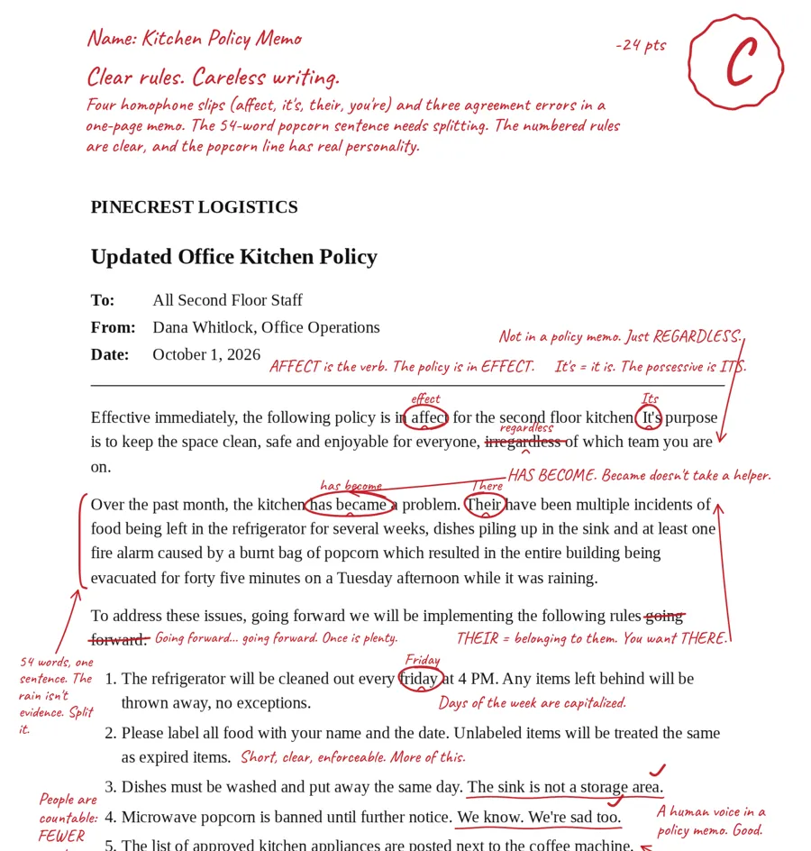

Grade this.
Drop in a document.
Get it back graded, in red pen.
Drop in a document.
Get it back
graded,
in red pen.
Reading your document
This usually takes 20 to 60 seconds. Keep this page open.
Your paper is back.
Your writing, graded in red pen
A free AI writing grader that hands your document back the way a sharp teacher would: your own pages, in red pen. It circles mistakes, writes corrections above the line, squeezes comments into the margins, and puts the grade and an overall comment at the top.

How it works
- Turn it in. Upload a PDF, a Word file or a photo of a page, or paste your text. Up to 8 pages.
- Claude reads it like a teacher. It works out what kind of writing it is and grades it by that standard: grammar and spelling, clarity, structure and logic.
- You get your paper back. The marks are drawn on your own pages. Download them, share them, or copy the comments to fix your draft.
What can it grade?
Essays (college application essays too), resumes and cover letters, blog posts, reports, and work emails and memos. A resume isn't graded like an essay, and a memo is judged on getting to the point.
Private by design
Your file is opened in your browser, and only its text is sent to Claude to be graded. We don't keep a copy of your writing, the comments or the grade.